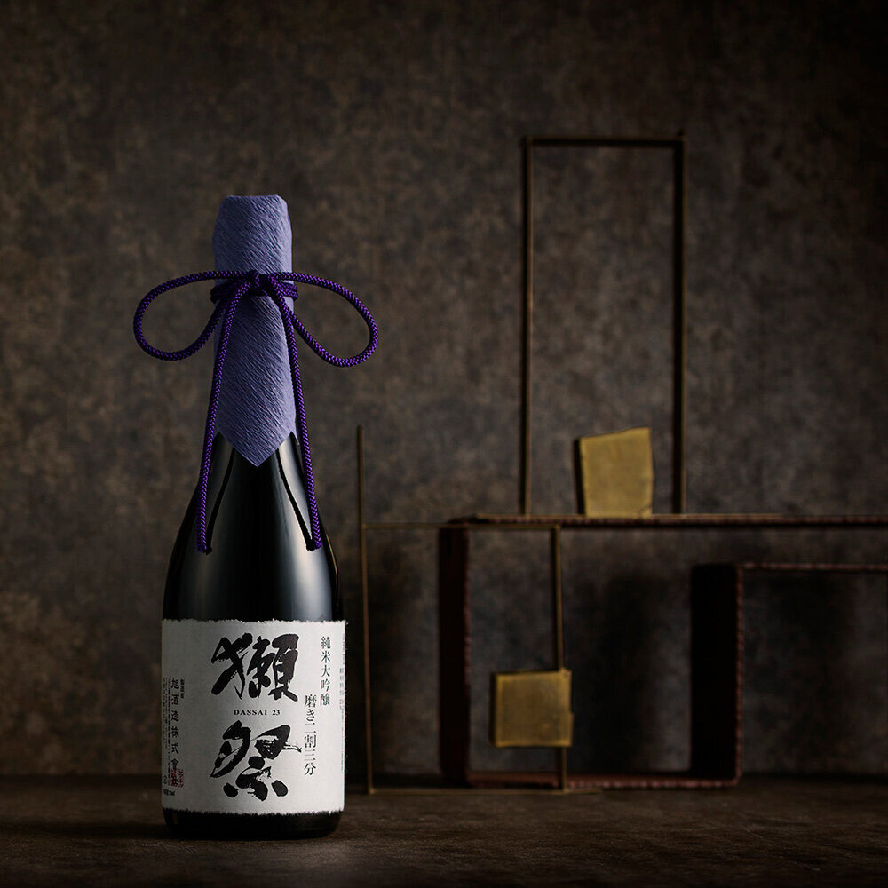
圖片來源 ↗01720 ml
獺祭
純米大吟醸 · 磨き二割三分
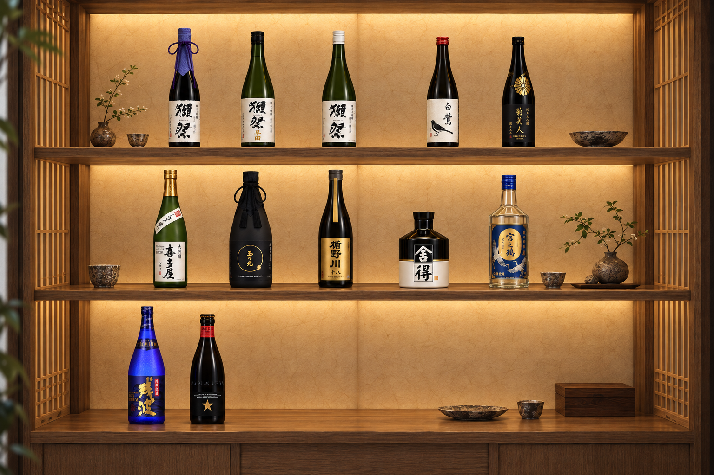
喝過的、喜歡的，慢慢留在這裡。

圖片來源 ↗純米大吟醸 · 磨き二割三分
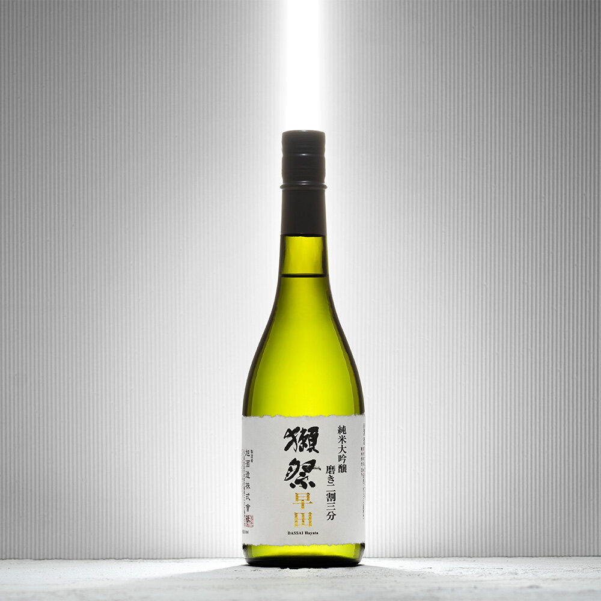
圖片來源 ↗二割三分 · 純米大吟釀
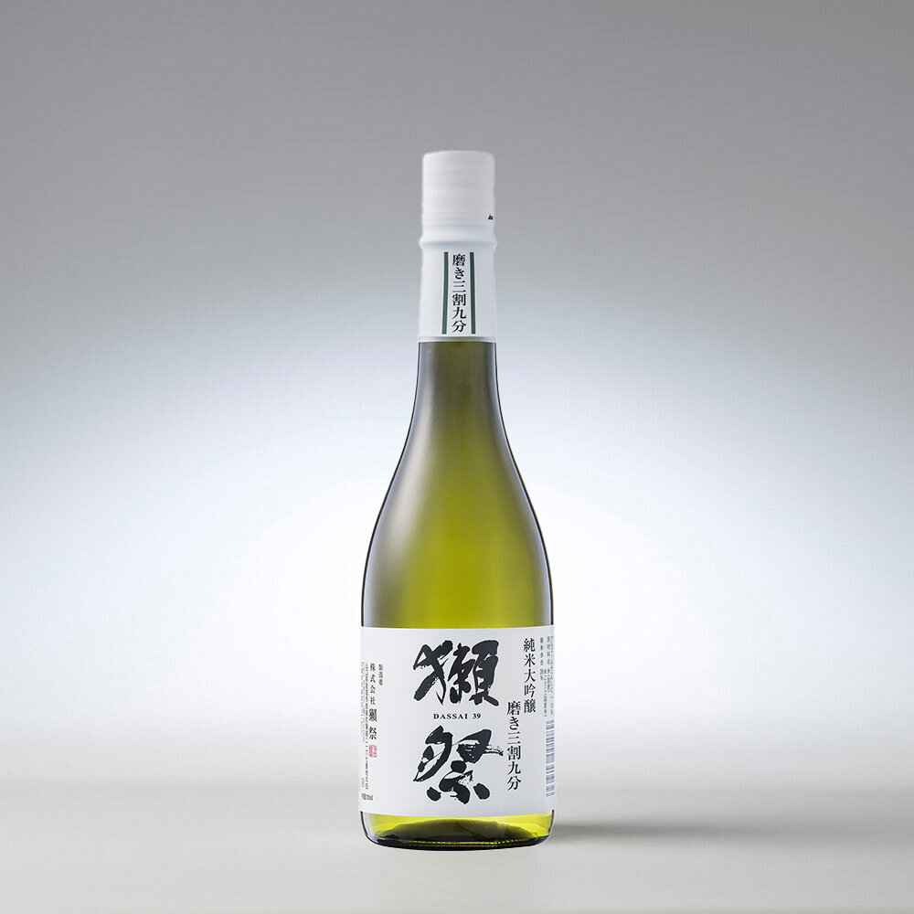
圖片來源 ↗純米大吟釀
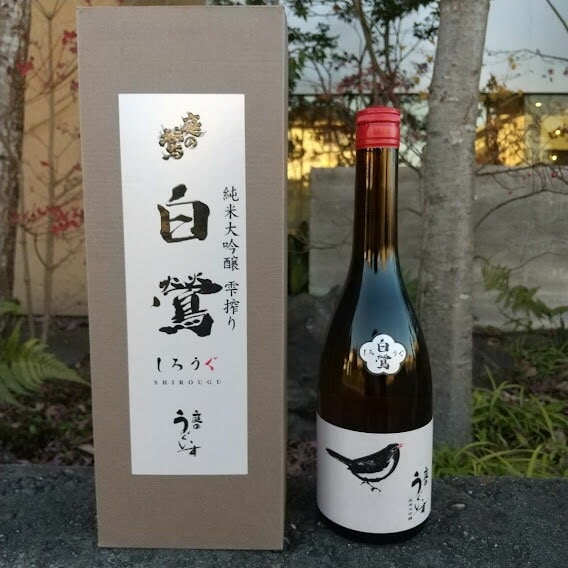
圖片來源 ↗雫搾り · 純米大吟釀
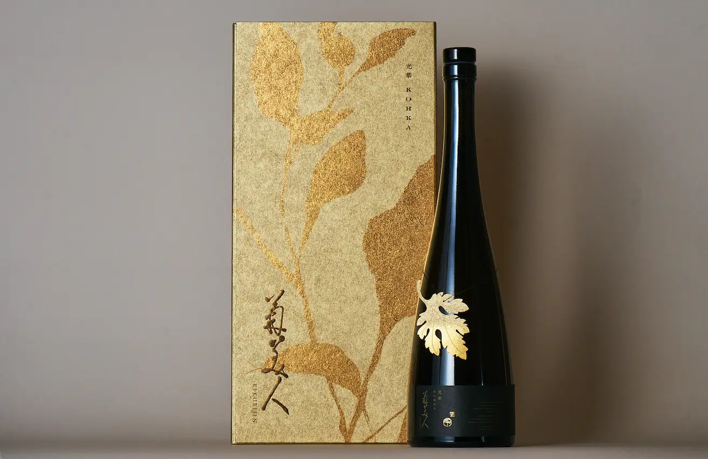
圖片來源 ↗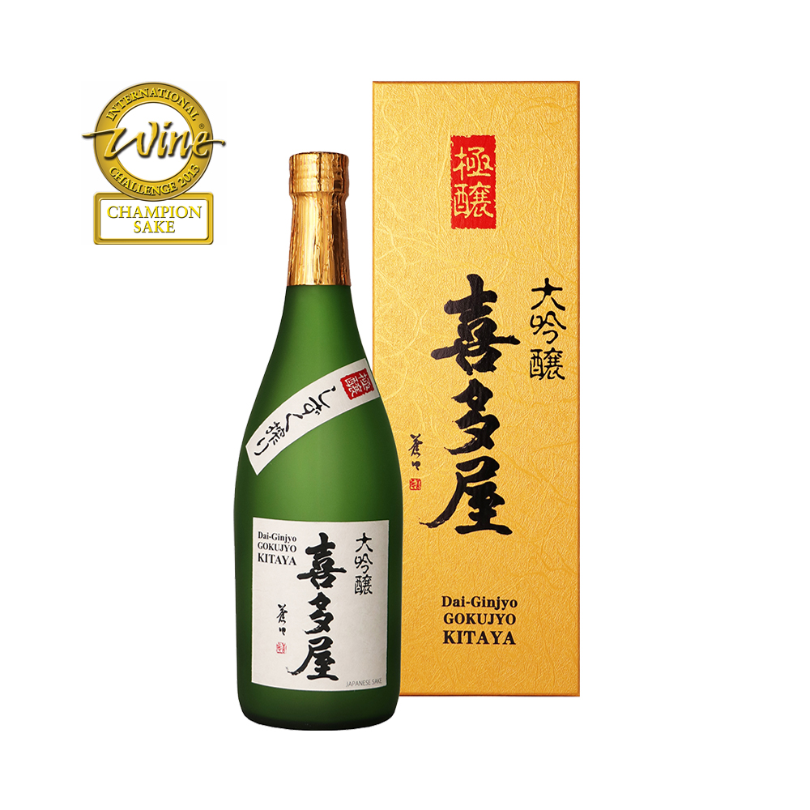
圖片來源 ↗大吟釀
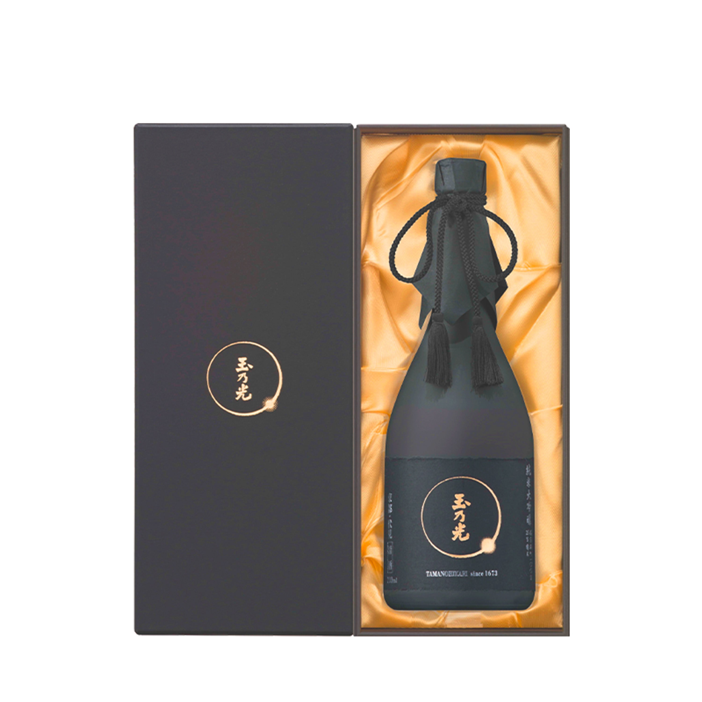
圖片來源 ↗純米大吟釀 · 黑瓶黑盒
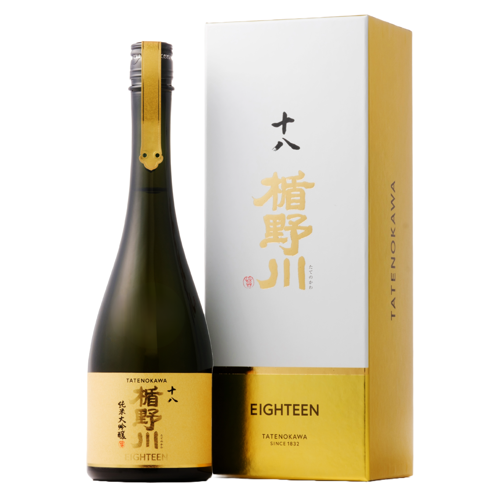
圖片來源 ↗純米大吟醸 · 雪女神 · 精米步合 18%
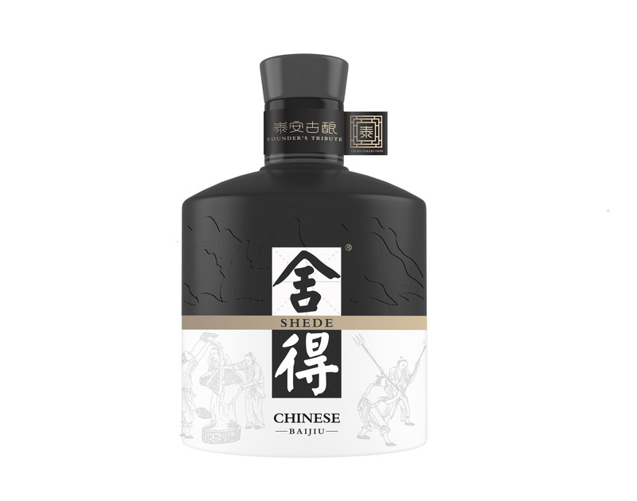
圖片來源 ↗免稅通路限定 · 香港機場購入
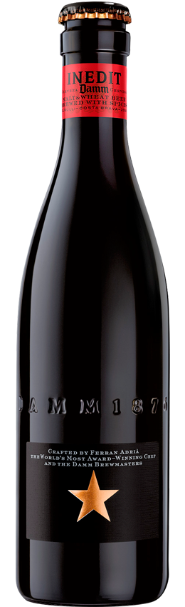
圖片來源 ↗麥芽與小麥調和的佐餐啤酒 · 西班牙
留一個位置，給下一瓶威士忌。
每一瓶的品飲筆記與故事，之後慢慢補上。